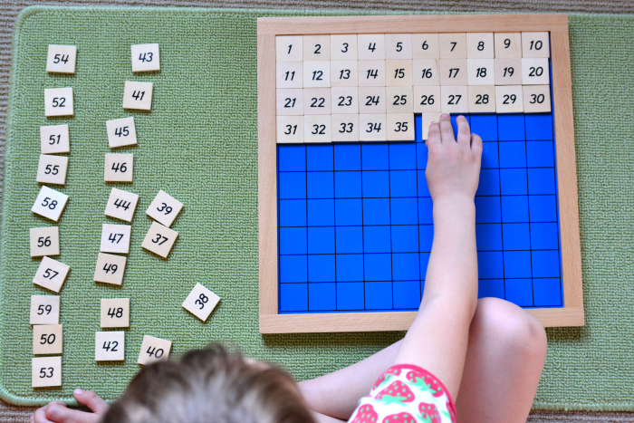

As a parent, I learned first-hand that children think mathematically long before they start school. Such informal knowledge about numbers is often referred to as ‘number sense’.
Both my boys began to show their number sense in everyday problem-solving situations before they could even walkthrough sorting and categorizing toys. By the time they were toddlers, both boys could reason about more or less, devise strategies for creating equal shares of countable objects, or use counting in a range of situations to reason about a single group of objects or to compare two groups.
As a stay-at-home mother, I spent a great deal of time encouraging the building of these skills with everyday interactions and play situations to develop their understanding. It was both away to connect and engage with my kids but also a tool to get stubborn little kids to do what needed to be done. For example: walking up flights of stairs is really hard for little legs but counting steps together is fun!
When setting out create a preschool app that would support early numeracy development through playful interactions, I wanted to reflect the experience that I had teaching these tools to my own children.
Through research I learned just how important the early introduction to numeracy can be to a child’s school experience. Counting skills and understanding of quantities and the relationships between them prior to starting primary school predicted children’s math achievement and teacher ratings of competence in math one year later. Upon entry to school, number sense and numeracy knowledge predict math achievement throughout schooling.
“Learning to count, identify numbers, and compare and manipulate quantities are key early numeracy skills. These are powerful predictors of school-age mathematical learning and performance.”
1:1 correspondence is the ability to match an object to the corresponding number and recognize that numbers are symbols to represent a quantity. Young children often learn to count without having an understanding of 1:1 correspondence. This means that while they can count they may not understand the meaning or value of the numbers. Numbers and symbols are abstract for children so 1:1 correspondence is the connection between the symbol, the language and the quantity.
Defined as “the ability to identify and name basic numerals”, number recognition can actually be broken down into separate skills – matching, identifying, and naming. When matching, a child can find the matching numeral when shown an example. Identifying focuses on the ability to point out a numeral when named. The next step is naming the numeral when asked. The final step is matching the numeral with the quantity of objects.
Focusing on 1:1 Correspondence and Number Recognition concepts I developed two lessons that each include levels of exercises for practice. I looked for cute animals and included bright colors to appeal to children. I researched fonts that were easy for emergent readers to decipher.
The following lesson compares numbers with amounts of animals to visually show what a number actually means and that numbers have a natural order.
The exercise below reinforces both number order and recognition of what a number actually represents.
You can try them out yourself by clicking on each one!